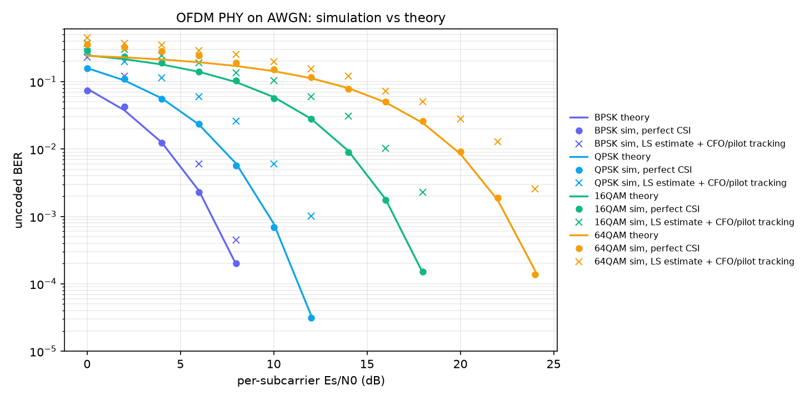
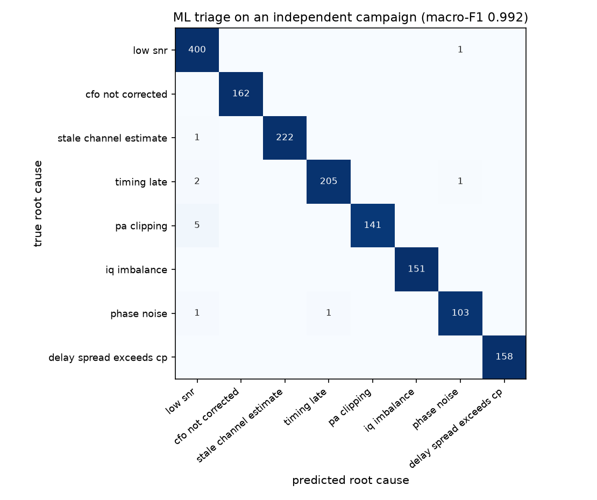

When an OFDM test fails, can the logs alone say why?
An 802.11a-style OFDM link simulator built as a validation harness. Each test case measures the link the way test equipment would (EVM, channel impulse response, pilot phase, constellation statistics), judges it against an EVM limit and writes a plain-text log. A triage model reads only those logs and names the root cause: one of seven injected RF and receiver faults, or "SNR too low for this modulation", which is a test-config problem, not a bug.
802.11a numerology, checked against theory
64-point FFT, 16-sample cyclic prefix, 48 data and 4 pilot subcarriers, Gray-coded BPSK to 64QAM, and the standard two-symbol long training field. The receiver estimates CFO from the phase advance between the two LTF copies, estimates the channel by least squares, equalizes and tracks common phase on the pilots.

Seven faults, and low SNR
Each fault leaves a physical signature in measurements the receiver already makes. The triage model never sees the injected fault, only the log.
| Root cause | Injected | Signature in the log |
|---|---|---|
low_snr | nothing: SNR below what the MCS needs | error ≈ what the LTF noise estimate predicts |
cfo_not_corrected | CFO estimated, never removed | pilot common phase ramps linearly per symbol |
stale_channel_estimate | equalizer uses a previous packet's channel | per-subcarrier error follows the old channel's fades |
timing_late | FFT window 1–8 samples past the CP | impulse response wraps to negative delay |
pa_clipping | soft-limiter PA, −2 to +4 dB above RMS | constellation gain < 1, outer points compressed |
iq_imbalance | modulator gain/phase imbalance | error correlates with the mirror subcarrier's symbol |
phase_noise | Wiener LO phase noise | pilot common phase random-walks |
delay_spread_exceeds_cp | 28-tap channel, CP of 16 | impulse-response energy beyond the CP |
Rules get 85%, trees get 99%
Trained on 8,000 cases (seed 0) and tested on an independently generated 4,000 (seed 1): 1,554 test failures with a single root cause. Both triagers use the same 17 features parsed from the logs; the rule list is hand-ordered and only its thresholds are fit on the training split.
| Root cause | Rules recall | ML recall |
|---|---|---|
| low_snr | 75.1% | 99.8% |
| cfo_not_corrected | 90.1% | 100% |
| stale_channel_estimate | 90.1% | 99.6% |
| timing_late | 97.1% | 98.6% |
| pa_clipping | 74.0% | 96.6% |
| iq_imbalance | 100% | 100% |
| phase_noise | 51.4% | 98.1% |
| delay_spread_exceeds_cp | 98.7% | 100% |
| Accuracy / macro-F1 | 84.9% / 0.839 | 99.2% / 0.992 |

Two causes, one confident answer
1,020 of the 2,574 test failures (40%) still fail when the injected fault is removed, because the SNR was also too low. A single-label triager has no way to say "both".
91% confident
of multi-cause failures get ≥ 0.9 confidence. The model names the injected fault 67% of the time and low SNR 32% of the time.
Confidence ranks them lower…
Of the least-confident 10% of all failures, 89% are multi-cause.
…but abstention misses most
Deferring that 10% to a human catches only 23% of the multi-cause cases. The rest go out with one confident label.
What it isn't
Uncoded, SISO
No FEC, one antenna, one packet per case; EVM is the only pass criterion.
Textbook impairments
Clipping, IQ imbalance and phase noise are standard models, not measured hardware.
One fault at a time
Injected faults never co-occur; only fault + low SNR overlap.
Simulated logs
Real lab logs are messier. The parser and features are the reusable part.
Test, run, triage
pip install -r requirements.txt
python -m pytest -q # 31 tests: BER vs theory, LS loss, ISI floor, each fault
python -m scripts.campaign 8000 runs/main 0 # ~90 s
python -m scripts.campaign 4000 runs/test 1
python -m scripts.evaluate runs/main runs/test results
python -m scripts.triage_report runs/main runs/test results/triage_report.mdCI runs the tests, a smaller campaign, evaluation and the triage report on every push, and posts the report to the job summary.